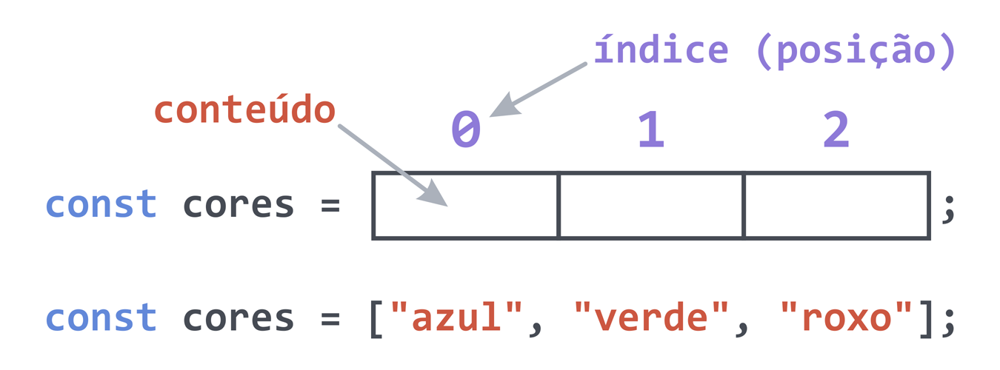

O Array é utilizado para armazenar uma coleção de elementos em uma única variável.
Na prática, o array é uma estrutura de dados que contém um índice numérico e um elemento, que pode ser de qualquer tipo primitivo de dados (int, float, string boolean), um objeto ou outro array.
Se não tivessemos arrays, teríamos que armazenar cada item em uma variável separada, então chamar o código para mostrar e adicionar separadamente cada item.
Por exemplo, se tivermos que adicionar 5 estudantes numa turma (lista), já daria bastante trabalho, porque temos que criar 5 variáveis: aluno1, aluno2, aluno3, aluno4, aluno5. Agora vamos imaginar que a turma é maior, com 30 estudantes? E se fosse uma palestra para 100 pessoas? Ou com 500?
Esta abordagem torna o trabalho muito repetitivo, menos eficiente e mais suscetível a erros.
Em JavaScript, os arrays usam índices numerados e os objetos usam índices nomeados.
const carros = ["Palio", "Civic", "Mustang"]; // Array
const carros = {"Fiat": "Palio", "Honda": "Civic", "Ford": "Mustang"}; // Objeto